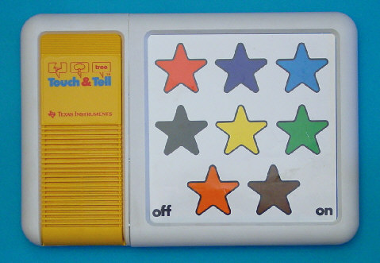
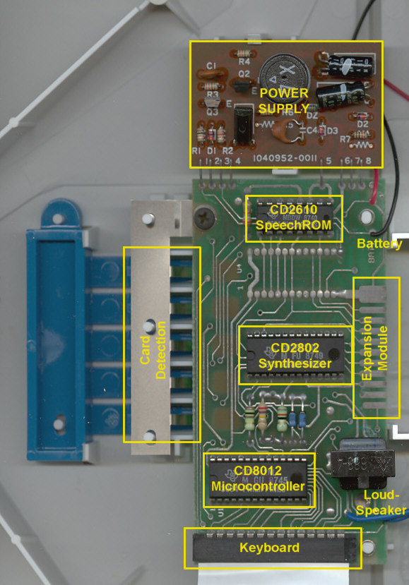

TI Touch & Tell
The toddler computer with no keyboard — you answer by pointing at the picture

Overview
The Texas Instruments Touch & Tell is a speech-synthesis learning toy introduced in 1981, shortly after the Speak & Spell line. It has no screen and no alphanumeric keyboard. One of several printed picture panels is placed over a large flat "position sensitive keyboard" — a membrane touch pad — and the toy asks a random question with its voice synthesizer; the child answers by pointing at the picture with a fingertip. Musical tones and sound effects reward correct answers.
The toy is built around the Speak & Spell speech lineage: a 4-bit TMS1100 microcontroller (2KB ROM, 128×4 bits RAM), a TMS5110A voice synthesis processor, and a 16K-bit voice synthesis memory. Texas Instruments rated it for children aged 2 to 5, and the same housing and technology served as the Vocaid, a medical speech aid that let mute people "speak" by pressing picture keys.
Deep dive
The interaction model is the point: the printed overlay IS the interface. The machine's question is randomized, the answer surface is the picture itself, and the child's finger is the pointer. This is a touch-to-answer interface for pre-literate children three years before the HP-150 touchscreen, and the direct ancestor of the modern tap-the-answer tablet toy.
Touch & Tell Picture Panel Libraries sold for $17.95 each: Alphabet Fun, Animal Friends, All About Me, Number Fun, Little Creatures, World of Transportation, and an E.T. pack teaching character recognition and object identification from the film.
Texas Instruments shipped country-specific variants in the same housing — the UK Touch & Tell, France's Le Livre Magique, Germany's Tipp & Sprich, and Italy's Libro Parlante. The idea evolved into the more advanced Touch & Discover and, later, the Super Speak & Read with two position-sensitive keyboards and the smaller Teddy Touch & Tell.
Touch & Tell completes the picture beside the keyboard-era Speak & Spell, the barcode-wand Magic Wand, the keypad Q&A Little Professor, and the voice-only Voyager: it is the one where input is pure pointing at a printed surface.
Team & pioneers
- Texas Instruments Consumer Products Group. Designer and manufacturer (1981).
- Joerg Woerner / DATAMATH Calculator Museum. Preservation: documentation, teardown photographs, and overlay manual PDFs.
Media
